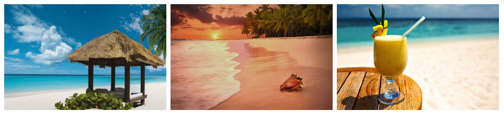
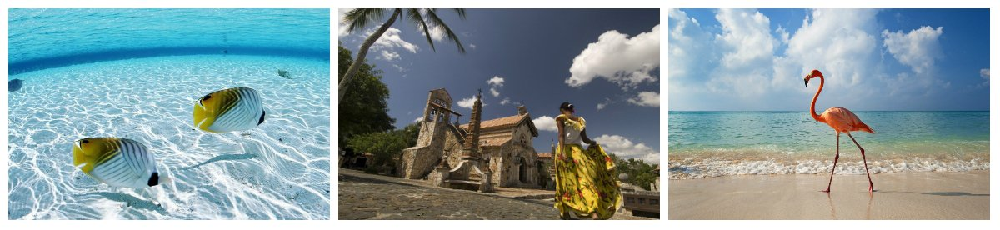

Курорти Домінікани
- Пунта Кана
- Ла Романо
- Санто Домінго
- Самана
- Бока Чика
- Пуерто Плата
Домінікана: пляжі, що ваблять екзотикою, та скарби колоніальної культури
Відпочинок в Домініканській республіці – це вірна ознака того, що життя
вдалося.
Серед туристів Домінікана вважається кращою країною для подорожі у
Карибському басейні. Республіка поєднує в собі тропічну красу дикої
природи, безліч архітектурних пам'яток і розвинену інфраструктуру для
висококласного відпочинку. Держава займає схід острова Гаїті та ряд
інших островів. Тут - 1500 км чудових білосніжних пляжів. Відкрив
пишність цих земель і посприяв його примноженню легендарний мореплавець
Христофор Колумб.
Безтурботний, але змістовний відпочинок на тлі приголомшливої
тропічної природи - так однією фразою можна описати курорти
Домінікани. Більшість готелів тут належать до світових мереж і працюють
відповідно до системи «все включено», щоб позбавити своїх гостей від
проблем і потреби піклуватися про побутові питання. Крім того,
республіка славиться в світі як одне з ідеальних місць для романтичного
весілля. З півдня острова починалася весільна подорож Лізи-Марії Преслі
і Майкла Джексона. Путівка в Домінікану може стати прекрасним весільним
подарунком - молодята ніколи не забудуть кілька днів, проведених в
тропічному раю, а чуттєвий меренге, який став візитною карткою країни,
дозволить закоханим висловити свою любов в танці.
Куди поїхати?
Шанувальникам цікавої архітектури варто відвідати Санто-Домінго (Santo Domingo), столицю республіки. У місті збереглося близько 300 історичних та архітектурних пам'яток, центральна його частина оголошена спадщиною ЮНЕСКО. Серед основних визначних пам'яток Санто-Домінго: будинок сина Христофора Колумба, собор Св. Марії, Військовий форт. У 30 км від столиці знаходиться знаменитий пляж Бока-Чіка. Трикілометрова коса з білосніжного піску тут захищена протяжним кораловим рифом. Незважаючи на малу глибину - не більше 1,5 м, пляж підійде для дайвінгу та інших морських розваг, а також для відпочинку з дітьми.
Готелі Домінікани, що ідеально підходять для відпочинку з дітьми, розташовані на курорті Ла Романа (La Romana). Тут найчистіші пляжі і неглибокий океан, а також національний парк. На захоплюючу екскурсію туристів запрошує селище Атос де Чавен, стилізоване під середземноморське поселення XVI століття.Вибираючи гарячі тури в Домінікану, зверніть увагу на такий курорт, як Самана (Samana). Тут можна знайти підходящі варіанти для відпочинку на практично незайманих пляжах Карибського моря. Цей курорт вважають меккою для любителів усамітненого проведення часу. Більшість готелів зосереджені на південному узбережжі курорту. Одне з кращих місць для сноркелінгу і дайвінгу в окрузі - острів Кайо-Левантадо, куди, до речі, можна відправитися з Пунта-Кани.Пів острів Самана також відомий завдяки національному парку Los Haitises. Тут можна скупнутися в підземному озері та вивчити стародавні наскальні малюнки. Ще одна визначна пам'ятка - водоспад Ель-Лимон.
Кращий час для Домінікани
Відпочивати в цьому тропічному раю в стилі «Баунті» можна цілий рік. Однак традиційно найбільш вдалим часом для поїздки сюди вважається період з грудня по квітень. Температура води в будь-яку пору року тут рідко опускається нижче +27 ° С, а середня температура повітря в першому зимовому місяці тримається на рівні +24 ° С. Дощі йдуть з травня по початок осені, особливо у вересні та жовтні, коли приходять мусонні зливи й урагани, з листопада погода в країні стабілізується.
Кухня та особливості побуту
Для приготування традиційних страв домініканці використовують рис і бобові, свинину і курятину, фрукти і овочі. Цікава деталь: незважаючи на велику кількість морепродуктів, місцеві їх практично не їдять, а ось туристи зможуть покуштувати свіжу рибу й дари океану. Ціни в Домінікані на їжу і розваги залежать від курорту, але в цілому висококласний сервіс характеризує посильна вартість. Громадський транспорт обійдеться дешево: можна скористатися автобусом, або місцевими маршрутками - гуа-гуа. Основна мова спілкування тут - іспанська, але в готелях часто говорять англійською. Будьте уважні: воду з під крану не варто пити - купуйте бутильовану. Вирушаючи в Домінікану, подбайте про медичну страховку. Вона дасть впевненість в тому, що райський відпочинок не буде зіпсований ніякими дрібними неприємностями.
- Ла Бандера (рис, м'ясо, квасоля, овочі, зелені смажені банани)
- Сан Кочо по-Домініканськи (готується на бульйоні з різних сортів м'яса з овочами або риба з кокосовим горіхом)
- Мангу (бананове пюре)
- Піньонате (десерт, приготований з молока і кокосів)
-
Фруктові соки
- Папайя
- Кокосове молоко
- Апельсин
- Ананас
- Пиво
- Ром
- Екзотичні коктелі